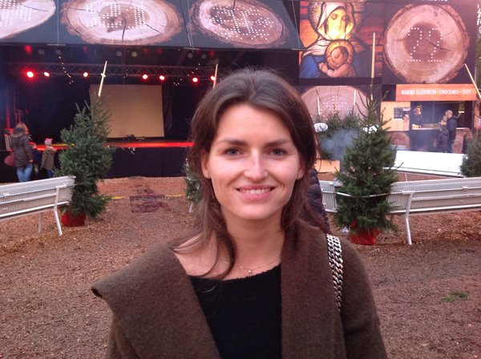

Suzette van Oss

Eigentijds Grand-Café #horeca
Een groot, eigentijds grand café met allure voor twintigers en dertigers. Een warm hart van de stad!
Gin bar #horeca
een knus klein gin barretje in de stad, in combinatie met een boetiek!